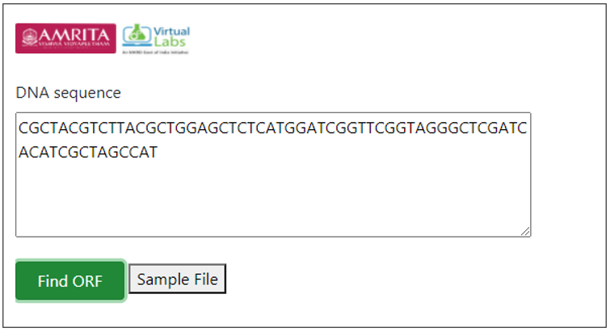

DNA sequence analysis and determining DNA open reading frames
Procedure to Work Simulator
Provide a DNA sequence in user interface for finding ORF. For example provide a hypothetical sequence CGCTACGTCTTACGCTGGAGCTCTCATGGATCGGTTCGGTAGGGCTCGATCACATCGCTAGCCAT

- Click on Find ORF tab for executing simulator.
- A default sequence file is provided in the user interface. User can download the file and can use the file as query sequence for finding ORF.
ORF is a continuous stretch of codons with a start codon usually AUG and with a stop codons usually UAA, UAG or UGA.
DIY
Import “stringr” library to R workspace
library("stringr")
Create function for finding Start and Stop codon
findPotentialStartsAndStops<- function(sequence)
{
Define a vector with the sequences of potential start and stop codons
codons<- c("atg", "taa", "tag", "tga")
Find the number of occurrences of each type of potential start or stop codon
for (i in 1:4)
{
codon<- codons[i]
Find all occurrences of codon "codon" in sequence "sequence"
occurrences<- as.data.frame(str_locate_all(sequence,codon))
Find the start positions of all occurrences of "codon" in sequence "sequence"
codonpositions<- c(occurrences[[1]])
Find the total number of potential start and stop codons in sequence "sequence"
numoccurrences<- length(codonpositions)
if (i == 1)
{
Make a copy of vector "codonpositions" called "positions"
positions<- codonpositions
Make a vector "types" containing "numoccurrences" copies of "codon"
types<- rep(codon, numoccurrences)
}
else
{
Add the vector "codonpositions" to the end of vector "positions":
positions<- append(positions, codonpositions,after=length(positions))
Add the vector "rep(codon, numoccurrences)" to the end of vector "types":
types<- append(types, rep(codon, numoccurrences),after=length(types))
}
}
Sort the vectors "positions" and "types" in order of position along the input sequence:
indices<- order(positions)
positions<- positions[indices]
types<- types[indices]
Return a list variable including vectors "positions" and "types":
mylist<- list(positions,types)
return(mylist)
}
findORFsinSeq<- function(sequence)
{
require(Biostrings)
Make vectors "positions" and "types" containing information on the positions of ATGs in the sequence:
mylist<- findPotentialStartsAndStops(sequence)
positions<- mylist[[1]]
types<- mylist[[2]]
Make vectors "orfstarts" and "orfstops" to store the predicted start and stop codons of ORFs
orfstarts<- numeric()
orfstops<- numeric()
Make a vector "orflengths" to store the lengths of the ORFs
orflengths<- numeric()
Print out the positions of ORFs in the sequence: Find the length of vector "positions"
numpositions<- length(positions)
There must be at least one start codon and one stop codon to have an ORF.
if (numpositions>= 2){
for (i in 1:(numpositions-1))
{
posi<- positions[i]
typei<- types[i]
found<- 0
while (found == 0)
{
for (j in (i+1):numpositions)
{
posj<- positions[j]
typej<- types[j]
posdiff<- posj - posi
posdiffmod3 <- posdiff %% 3
Add in the length of the stop codon
orflength<- posj - posi + 3
if (typei == "atg" && (typej == "taa" || typej == "tag" || typej== "tga") && posdiffmod3 == 0)
{
Check if we have already used the stop codon at posj+2 in an ORF numorfs<- length(orfstops) usedstop<- -1 if (numorfs> 0) { for (k in 1:numorfs) { orfstopk<- orfstops[k] if (orfstopk == (posj + 2)) { usedstop<- 1 } } } if (usedstop == -1) { orfstarts<- append(orfstarts, posi,after=length(orfstarts)) orfstops<- append(orfstops, posj+2,after=length(orfstops)) # Including the stop codon. orflengths<- append(orflengths, orflength,after=length(orflengths)) } found<- 1 break } if (j == numpositions) { found <- 1 } } } } }
Sort the final ORFs by start position:
indices<- order(orfstarts)
orfstarts<- orfstarts[indices]
orfstops<- orfstops[indices]
Find the lengths of the ORFs that we have
orflengths<- numeric()
numorfs<- length(orfstarts)
for (i in 1:numorfs)
{
orfstart<- orfstarts[i]
orfstop<- orfstops[i]
orflength<- orfstop - orfstart + 1
orflengths<- append(orflengths,orflength,after=length(orflengths))
}
mylist<- list(orfstarts, orfstops, orflengths)
return(mylist)
}